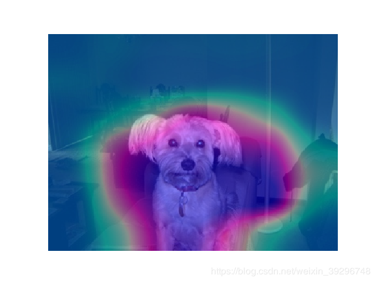

基于pascal voc数据集的多标签分类网络的训练
时间：2020-3-8
摘要：在很多情况下，图片的标签数目不是固定的，有的有一个标签，有的有两个标签，但标签的种类总数是固定的，比如为20类。多标签分类的任务就是训练一个模型，然后利用这个模型给出当前图片所包含的所有标签。最近，多标签分类任务在弱监督领域也有了广泛的应用，所以，本篇博客将对如何使用pytorch进行多标签分类任务的训练做出记录。源代码以及处理好的数据关注左侧公众号后回复pascal voc 获取
一、数据集
1.1、数据集准备
本次的多标签分类任务的训练基于原始pascal voc2012数据集（点击下载）及其增强数据集（点击下载，提取码：fg3e）。关于这两个数据集的介绍及如何将这两个数据集融合成最终我们需要使用的数据集，可参考这一篇博客（点击查看）。最终处理过后数据集的目录结构如下图：
--Annotations
--ImageSets
--Actions
--Layerout
--Main
--Segmatation
--JOEGImages
--SegmetationClass
--SegmetationClassAug
1.2、数据集分析
我们统计了pascal voc数据集中可用于多标签分类的数据里面类别的分布情况。如下图所示，包含person类的图片数目远大于其他类别。这就会出现一个现象就是当你不加载ImageNet的预训练模型进行模型初始化而直接考试训练的画，会出现mAP（多标签分类的评价指标，后面会提到它的原理）一直停留在某一个数值上不去的情况。这是因为，由于类别不均衡，所训练的模型会只预测出人这个类别无论你输入什么图片。打印训练时模型的输出结果也会证实这一点，你会发现有一个类别的预测概率一直是所有类别中最高的，这个类就是person。这个结果所造成的原因是显然的，因为一个batch中假设输入了32张图片，有15张左右都是包含人的，那么网络把预测出人的概率提升，准确率肯定会提高。再极端一点，数据集中包含100张图，99张都是包含person的，那么网络把所有的图片都预测为person准确率就有99%了。对于这个问题，可以做以下两步来解决：
* 训练前加载Imagenet预训练模型；（很重要！！！）
* 统计出每一个类别的的数量，再计算出他们的权重，从而使用加权的损失函数。
当然，如果你想自己构建一个网络所以没有预训练模型加载的话，那么你可以采用过采样或者欠采样的方法来解决这个问题。所谓过采样就是，通过复制的方法把除了person的其他类别的图片变多；而欠采样就是丢掉一部分person的训练数据，从而也可以达到使得person和其他类别数目一样的目的。
1.3、数据读取
数据集对应图片的label记录于Annotation / *.xml中。以下是读取代码:
import os, numpy as np
import torch
import torch.utils.data as data
from scipy.misc import imread, imresize
from scipy.sparse import csr_matrix
from PIL import Image
import xml.etree.ElementTree as ET
class DataLoader(data.Dataset):
def __init__(self,data_path="", trainval='trainval',transform=None):
self.data_path = data_path
self.transform = transform
self.trainval = trainval
self.__init_classes()
self.names, self.labels = self.__dataset_info()
def __getitem__(self, index):
x = imread(self.data_path+'JPEGImages/'+self.names[index]+'.jpg',mode='RGB')
x = Image.fromarray(x)
if self.transform !=None:
x = self.transform(x)
y = self.labels[index]
return x, y
def __len__(self):
return len(self.names)
def __dataset_info(self):
#annotation_files = os.listdir(self.data_path+'/Annotations')
with open(self.data_path+'ImageSets/Main/'+self.trainval+'.txt') as f:
annotations = f.readlines()
annotations = [n[:-1] for n in annotations]
names = []
labels = []
for af in annotations:
filename = os.path.join(self.data_path,'Annotations',af)
tree = ET.parse(filename+'.xml')
objs = tree.findall('object')
num_objs = len(objs)
boxes_cl = np.zeros((num_objs), dtype=np.int32)
for ix, obj in enumerate(objs):
cls = self.class_to_ind[obj.find('name').text.lower().strip()]
boxes_cl[ix] = cls
lbl = np.zeros(self.num_classes)
lbl[boxes_cl] = 1
labels.append(lbl)
names.append(af)
return np.array(names), np.array(labels).astype(np.float32)
def __init_classes(self):
self.classes = ('aeroplane', 'bicycle', 'bird', 'boat',
'bottle', 'bus', 'car', 'cat', 'chair',
'cow', 'diningtable', 'dog', 'horse',
'motorbike', 'person', 'pottedplant',
'sheep', 'sofa', 'train', 'tvmonitor')
self.num_classes = len(self.classes)
self.class_to_ind = dict(zip(self.classes, range(self.num_classes)))
if __name__ == '__main__':
data = DataLoader()
x, y = data.__getitem__(3)
print(x,y)
二、模型构建
以下是resnet50的构建代码
import torch
import torch.nn as nn
import torch.utils.model_zoo as model_zoo
def conv3x3(in_planes, out_planes, stride=1, groups=1, dilation=1):
"""3x3 convolution with padding"""
return nn.Conv2d(in_planes, out_planes, kernel_size=3, stride=stride,
padding=dilation, groups=groups, bias=False, dilation=dilation)
def conv1x1(in_planes, out_planes, stride=1):
"""1x1 convolution"""
return nn.Conv2d(in_planes, out_planes, kernel_size=1, stride=stride, bias=False)
class Bottleneck(nn.Module):
expansion = 4
__constants__ = ['downsample']
def __init__(self, inplanes, planes, stride=1, downsample=None, groups=1,
base_width=64, dilation=1, norm_layer=None):
super(Bottleneck, self).__init__()
if norm_layer is None:
norm_layer = nn.BatchNorm2d
width = int(planes * (base_width / 64.)) * groups
# Both self.conv2 and self.downsample layers downsample the input when stride != 1
self.conv1 = conv1x1(inplanes, width)
self.bn1 = norm_layer(width)
self.conv2 = conv3x3(width, width, stride, groups, dilation)
self.bn2 = norm_layer(width)
self.conv3 = conv1x1(width, planes * self.expansion)
self.bn3 = norm_layer(planes * self.expansion)
self.relu = nn.ReLU(inplace=True)
self.downsample = downsample
self.stride = stride
def forward(self, x):
identity = x
out = self.conv1(x)
out = self.bn1(out)
out = self.relu(out)
out = self.conv2(out)
out = self.bn2(out)
out = self.relu(out)
out = self.conv3(out)
out = self.bn3(out)
if self.downsample is not None:
identity = self.downsample(x)
out += identity
out = self.relu(out)
return out
class ResNet(nn.Module):
def __init__(self, block, layers, num_classes=1000, zero_init_residual=False,
groups=1, width_per_group=64, replace_stride_with_dilation=None,
norm_layer=None):
super(ResNet, self).__init__()
if norm_layer is None:
norm_layer = nn.BatchNorm2d
self._norm_layer = norm_layer
self.inplanes = 64
self.dilation = 1
if replace_stride_with_dilation is None:
# each element in the tuple indicates if we should replace
# the 2x2 stride with a dilated convolution instead
replace_stride_with_dilation = [False, False, False]
if len(replace_stride_with_dilation) != 3:
raise ValueError("replace_stride_with_dilation should be None "
"or a 3-element tuple, got {}".format(replace_stride_with_dilation))
self.groups = groups
self.base_width = width_per_group
self.conv1 = nn.Conv2d(3, self.inplanes, kernel_size=7, stride=2, padding=3,
bias=False)
self.bn1 = norm_layer(self.inplanes)
self.relu = nn.ReLU(inplace=True)
self.maxpool = nn.MaxPool2d(kernel_size=3, stride=2, padding=1)
self.layer1 = self._make_layer(block, 64, layers[0])
self.layer2 = self._make_layer(block, 128, layers[1], stride=2,
dilate=replace_stride_with_dilation[0])
self.layer3 = self._make_layer(block, 256, layers[2], stride=2,
dilate=replace_stride_with_dilation[1])
self.layer4 = self._make_layer(block, 512, layers[3], stride=2,
dilate=replace_stride_with_dilation[2])
self.avgpool = nn.AdaptiveAvgPool2d((1, 1))
self.fc_out = nn.Linear(512 * block.expansion, num_classes)
for m in self.modules():
if isinstance(m, nn.Conv2d):
nn.init.kaiming_normal_(m.weight, mode='fan_out', nonlinearity='relu')
elif isinstance(m, (nn.BatchNorm2d, nn.GroupNorm)):
nn.init.constant_(m.weight, 1)
nn.init.constant_(m.bias, 0)
# Zero-initialize the last BN in each residual branch,
# so that the residual branch starts with zeros, and each residual block behaves like an identity.
# This improves the model by 0.2~0.3% according to https://arxiv.org/abs/1706.02677
if zero_init_residual:
for m in self.modules():
if isinstance(m, Bottleneck):
nn.init.constant_(m.bn3.weight, 0)
elif isinstance(m, BasicBlock):
nn.init.constant_(m.bn2.weight, 0)
def _make_layer(self, block, planes, blocks, stride=1, dilate=False):
norm_layer = self._norm_layer
downsample = None
previous_dilation = self.dilation
if dilate:
self.dilation *= stride
stride = 1
if stride != 1 or self.inplanes != planes * block.expansion:
downsample = nn.Sequential(
conv1x1(self.inplanes, planes * block.expansion, stride),
norm_layer(planes * block.expansion),
)
layers = []
layers.append(block(self.inplanes, planes, stride, downsample, self.groups,
self.base_width, previous_dilation, norm_layer))
self.inplanes = planes * block.expansion
for _ in range(1, blocks):
layers.append(block(self.inplanes, planes, groups=self.groups,
base_width=self.base_width, dilation=self.dilation,
norm_layer=norm_layer))
return nn.Sequential(*layers)
def _forward_impl(self, x):
# See note [TorchScript super()]
x = self.conv1(x)
x = self.bn1(x)
x = self.relu(x)
x = self.maxpool(x)
x = self.layer1(x)
x = self.layer2(x)
x = self.layer3(x)
x = self.layer4(x)
x = self.avgpool(x)
x = torch.flatten(x, 1)
x = self.fc_out(x)
return x
def forward(self, x):
return self._forward_impl(x)
def _resnet(arch, block, layers, pretrained, progress, **kwargs):
model = ResNet(block, layers, **kwargs)
if pretrained:
state_dict = model_zoo.load_url(model_urls[arch])
model.load_state_dict(state_dict)
return model
def resnet50(pretrained=False, progress=True, **kwargs):
return _resnet('resnet50', Bottleneck, [3, 4, 6, 3], pretrained, progress,
**kwargs)
三、训练细节
3.1、损失函数的选择
我们选用pytorch中内置的多标签损失函数nn.MultiLabelSoftMarginLoss，并使用计算好的权重对其进行加权。需要注意的是，MultiLabelSoftMarginLoss中包含了对输出结果的sigmoid操作，所以再网络构建的时候，输出结果时不需要对结果进行sigmoid。
3.2、其余超参数的设置
* 评价指标mAP：关于mAP如何评价模型的好坏参见这一篇博客（点击查看）
* epoch：模型训练20个eopch
* 学习率：初始学习率为0.001，随后每隔5个epoch，学习率*0.5
* batch_size:32
3.3、训练结果
在训练集上mAP达到91.7%，验证集为89.85%。
四、CAM可视化
在弱监督中，训练好的多标签分类网络可以进行可以用CAM来定位图片中存在的目标。以下是结果展示：
| 原图 | CAM结果 |
|  |